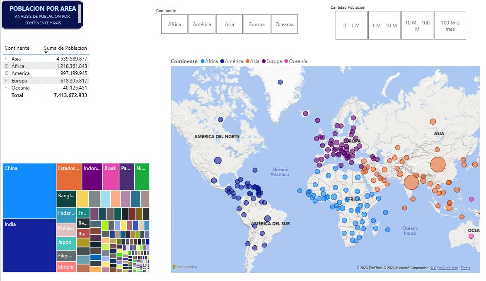
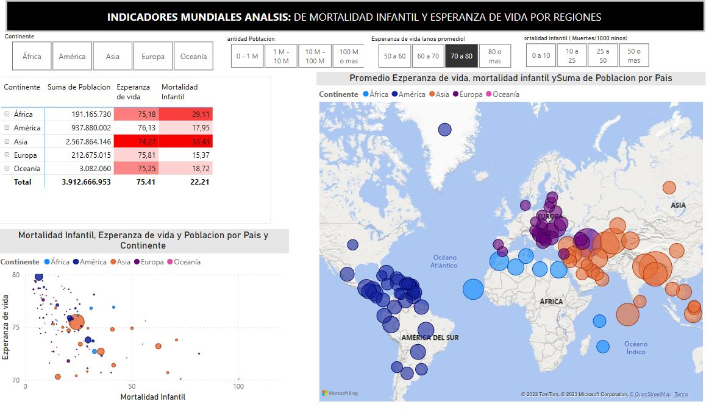

Contacto
Puedes contactarme a través de los siguientes medios:
- Email: stibenrapalog@gmail.com
- Teléfono: +504-89091504


En este proyecto, se ha llevado a cabo la integración de diversas fuentes de datos para proporcionar información clave a través de mapas interactivos y gráficos en dos reportes distintos. El objetivo principal es analizar y visualizar indicadores de población, esperanza de vida y mortalidad infantil a nivel mundial.
El primer reporte se enfoca en los indicadores de población por país y continentes, brindando una visión general de forma sencilla. Posteriormente, se profundiza en indicadores más complejos como la esperanza de vida y la mortalidad infantil, permitiendo su análisis por categorías de grupos de continentes, grupos de población y rangos de esperanza de vida.
A través de la integración de datos y el uso de gráficos interactivos, se busca establecer relaciones significativas entre la esperanza de vida y la mortalidad infantil. Esto permitirá comprender mejor los factores que influyen en la calidad de vida de las poblaciones y tomar decisiones informadas en materia de políticas públicas y salud.
Explora este proyecto y descubre cómo la integración de datos y la visualización de indicadores mundiales pueden proporcionar valiosos conocimientos sobre la población y la salud en diferentes regiones del mundo. A través de mapas interactivos y gráficos dinámicos, podrás explorar las relaciones entre la esperanza de vida y la mortalidad infantil, y obtener una perspectiva global de los desafíos y oportunidades en este ámbito.
Power Bi
Poblacion por pais y continente
Indicadores mundiales de Esperanza de vida y Mortalidad Infantil
Puedes contactarme a través de los siguientes medios: